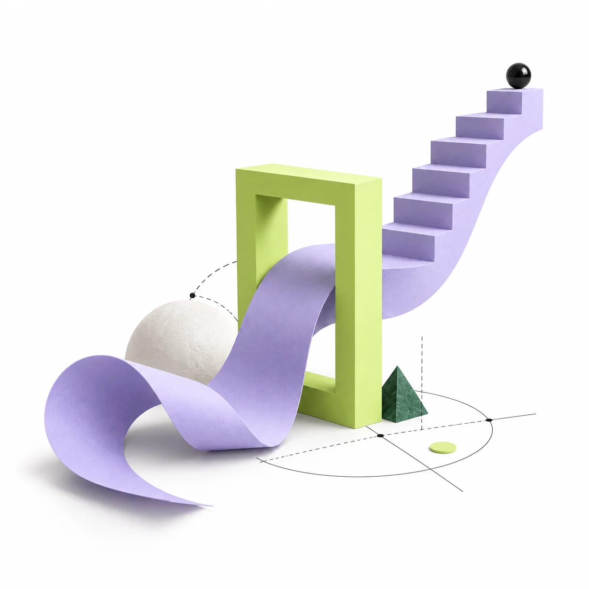

Des cours clairs,
chapitre par chapitre.
Des explications structurées, des résumés et les notions essentielles pour reprendre un chapitre à ton rythme.
Cours, exercices corrigés et annales du Bac marocain, organisés selon ta filière.
Compte sécurisé · Progression synchronisée
نقطة كترتّب ليك البرنامج على حساب الشعبة ديالك: كتشوف المواد اللي كاتخصك، ومن بعد كتلقى كل درس، تمرين وامتحان فبلاصتو.
Noqta rassemble les ressources utiles du programme marocain dans un seul espace, classées par filière, matière et chapitre.
Des explications structurées, des résumés et les notions essentielles pour reprendre un chapitre à ton rythme.
Des exercices progressifs avec une méthode expliquée étape par étape, pas seulement la réponse finale.
Retrouve les sujets des années précédentes, travaille en conditions réelles puis consulte la correction.
Sciences Maths, Sciences Physiques ou SVT : accède directement aux matières et contenus qui te concernent.
Commence avec deux matières, révise tout le programme ou avance avec un accompagnement rapproché.
Concentre tes efforts sur les deux matières qui comptent le plus pour toi.
Tout le programme et l’énergie d’une grande communauté d’élèves.
Un petit groupe pour participer davantage, complété par un suivi individuel.
Les tarifs de lancement et les modalités d’inscription seront annoncés avant l’ouverture des abonnements.
Ce qui existe, ce qui arrive.
On fait la différence.
La configuration de ton parcours : profil, filière et matières. Le parcours est conservé dans ton navigateur, sans compte en ligne ni synchronisation entre appareils.
La bibliothèque Maths et Physique-Chimie SM, le lecteur de cours, la progression et les explications des professeurs sont accessibles dans l’espace connecté. Les contenus sans source vérifiée restent clairement signalés comme indisponibles.
Les contenus et coefficients devront être associés au cadre de référence de la filière et de l’année concernées, puis validés avant publication. Ce prototype ne constitue pas une préparation officiellement validée.
Essentiel couvre deux matières au choix. Plus ouvre toutes les matières et la classe virtuelle générale. Pro ajoute une classe virtuelle limitée à 15 élèves et des sessions individuelles 1-to-1. Le portefeuille en jetons sert aux explications individuelles ; une commande n’est créditée qu’après confirmation effective du règlement.
Non. Les champs établissement et classe sont un brouillon temporaire. Les groupes, invitations et outils de gestion professeur nécessitent encore une connexion au LMS et des contrôles d’accès.
2e Bac marocain. Ta filière. Ta façon d’avancer.
Retrouve tes cours, tes annales et ta progression sur tous tes appareils.
Chaque session compte. Celle d’aujourd’hui a été ajustée selon tes dernières erreurs.
↗ +1,4 ce mois
Continue à ce rythme : ta trajectoire rejoint ton objectif.
Construite à partir de ton objectif, de tes lacunes et de ton rythme.
Comprendre la convergence puis résoudre 3 questions progressives.
Tout est organisé selon ta filière et relié au cadre de référence.
Limites, monotonie, convergence et raisonnement par récurrence.
86% maîtrisé · 8 notions
54% maîtrisé · Priorité
72% maîtrisé · 6 notions
43% maîtrisé · À renforcer
Travaille un sujet entier ou question par question, sans réponse prématurée.
Analyse descriptive des sujets disponibles — aucune prédiction du prochain Bac.
4 h · 20 points · 5 exercices
4 h · 20 points · 4 exercices
Une estimation vivante, affinée après chaque activité.
Projection indicative. Les coefficients doivent être validés dans le référentiel annuel.